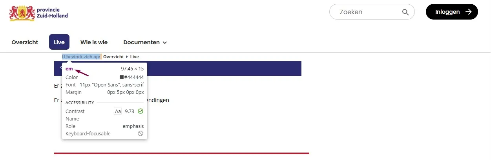

#1 - Onjuist gebruik van em-element

Op alle pagina's met een breadcrumb (behalve de homepagina) wordt het em-element rond de tekst "U bevindt zich op:" gebruikt voor visuele opmaak.
Hetzelfde probleem komt voor op de pagina:
- https://pzh.notubiz.nl/vergadering/1253785 — bij teksten als "De mogelijkheid bestaat om aan … via statengriffie@pzh.nl" wordt het
em-element ook voor styling gebruikt.
User story
Als bezoeker die een schermlezer of andere hulpsoftware gebruikt, heb ik nodig dat schuingedrukte tekst alleen met
<em>wordt gemarkeerd als die ook echt nadruk draagt — niet voor visuele opmaak — want wanneer<em>puur voor de uitstraling wordt ingezet, kondigt mijn schermlezer de tekst aan met nadruk die er niet bedoeld was, en dat kan misleidend zijn en mijn begrip van de tekst verstoren.
Oplossing
Verwijder de overbodige em-elementen en regel de cursivering met CSS. Wanneer het echt alleen om visuele opmaak gaat, kan ook het <i>-element worden gebruikt.
#2 - De kleur van de rand van het invoerveld heeft niet genoeg contrast
Op alle pagina's (behalve de homepagina) staat bovenaan het zoekelement. De contrastverhouding tussen de grijze (#CDCDCF) rand en de witte paginakleur is 1,6:1.
User story
Als bezoeker die slechtziend is, leeftijdsgerelateerd contrastverlies heeft, of een scherm in fel zonlicht gebruikt, heb ik nodig dat de rand van elk invoerveld minimaal 3:1 contrast heeft met de paginakleur — want de rand vertelt mij "dit is een veld waarin je kunt typen", en een rand die ik niet zie levert mij een onzichtbaar formulierveld op dat ik gewoon over het hoofd zie.
Oplossing
De randen van interactieve elementen zoals invoervelden moeten minimaal een contrast van 3,0:1 hebben met de achtergrond.